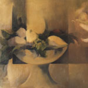

Nélida Palumbo Ferle se ha formado plásticamente en los talleres de la Escuela Superior de Bellas Artes "Ernesto de la Cárcova" con maestros de notable trayectoria. Es egresada asimismo de la Escuela "Fernando Fader." Frecuentó renombrados talleres, entre los que se encuentran el de Aurelio Macchi y Anibal Carreño, entre otros. Su obra posee la calidad que impone una tradición pictórica que puede atribuirse a dos factores principales. El primero es que la artista proviene de una familia educada tanto en el lenguaje de la pintura como en otras formas de arte; el segundo factor es la frecuentación con las obras de los grandes maestros argentinos que renovaron a comienzos del siglo XX el lenguaje pictórico, dejando liberada así una fuerza instintiva del color "fauve" y las nuevas tendencias que construyeron una visión ordenada dentro de cánones compositivos post-cubistas.
Sus temas predilectos son escenas tradicionales argentinas y paisajes; estos motivos protagonizaron la producción de las escuelas artísticas de la ribera, cuya historia es evocada cuando hablamos de los pintores de la Boca del Riachuelo, de la isla Maciel y también aquellos relacionados con la pintura Rioplatense. También vemos enfocado el paisaje urbano con las mismas notas distintivas en cuanto a resoluciones plásticas de color y movimiento.
En la obra pictórica de Nélida Palumbo Ferle encontramos un color estallante, en algunas pinturas la plena saturación de la materia cromática de fuerte raigambre "fauve". La artista demuestra también un manejo excepcional y con un tono más intimista en sus obras realizadas con la técnica del pastel, pero en estos momentos es el acrílico y el fuerte cromatismo el que protagoniza sus nuevos trabajos. Otras de sus obras están resueltas por una paleta restringida, tratada con pequeños grafos y gestualidad sensitiva. Las comparte también con otra visión muy ligada a sentimientos de melancolía donde el silencio se expresa en la atmósfera del paisaje. Ambas expresiones son habituales en la artista, y en el mismo movimiento "fauve", también el pintor Albert Marquet es un buen ejemplo de esto.
Existe entre sus obras de pequeño formato una serie con un juego gestual que es único y conlleva una paleta que posee refinadas combinaciones de color y un perfecto tratamiento hacia los grises coloreados y matizados. Nélida Palumbo Ferle, liberada totalmente a su técnica e instinto pictórico -que es de una fuerza innata-, resuelve con dinámica y tensión espacial sus obras. La amplia gama cromática nos hace ver la multiplicidad de encuadres, de choques que se penetran y de fuerzas entrecruzándose dentro del conglomerado compositivo de líneas y planos.
Muchas de sus obras nos recuerdan a los pintores del barrio de la Boca, quienes impusieron una visión, una forma de ver la pintura y una realidad puramente argentina, como lo hace la obra de esta artista.